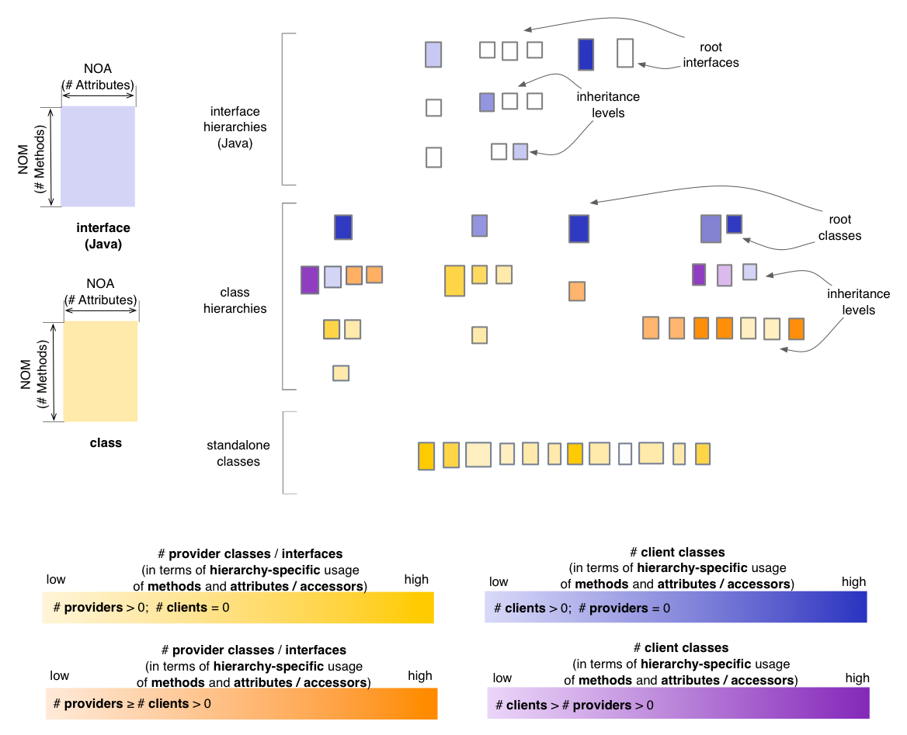
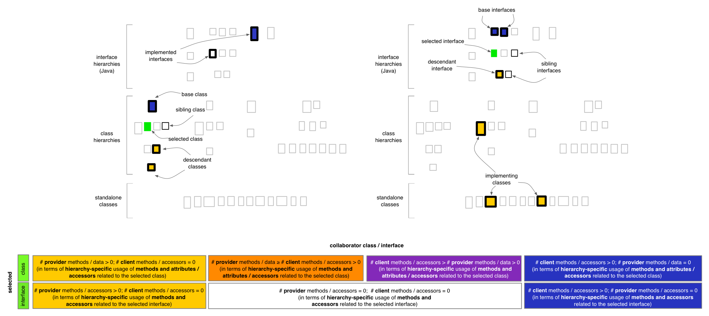

Inheritance Map - Inheritance Perspective
The Inheritance Perspective of the Inheritance Map
highlights inheritance-specific use of both data and methods between
classes and interfaces. In this context “inheritance specific use”
means data accesses or method calls that occur exclusively through the
implicit or explicit use of self reference / pointer (this / super
keywords). In other words, if a class “B” extends another class “A”,
and class “B” has a method “b()” which contains code that refers to
protected members inherited from class “A”, then those references are
considered to be inheritance specific if and only if they occur through
the implicit or explicit use of the self reference / pointer. They are
not considered inheritance specific accesses, if they occur for example
through a local variable of type “A” defined in method “b()”.
In the default state,
the Inheritance Perspective will render classes and interfaces based on
their predominant nature from the viewpoint of inheritance-specific method calls and data accesses, using
four color gradients:
- if a class calls methods or accesses data from its hierarchy through a self reference / pointer, but its methods are not called (i.e. it is a
pure client) from within the hierarchy using a self reference / pointer, it is rendered in a shade
of yellow
- if a class calls methods or accesses data from its hierarchy through a self reference / pointer, and is also called from within the class hierarchy using a self reference / pointer, it will be
rendered in
a color that depends on which aspect is predominant (i.e. mostly client
shown in a shade of orange, or mostly provider shown in a shade
of magenta)
- if the methods of a class are called from other methods in the class hierarchy through a self reference / pointer, but the class itself does not call
operations nor it accesses data from the class hierarchy (i.e. it is a
pure provider) through a self reference / pointer, it is shown in a shade of blue

Entity selection
The user may select a class or an interface in
the map, in
which case the coloring of the map changes to reflect the
inheritance-specific use of data and methods from
the point of view of the selcted entity. The selected entity is colored
in green (with no borders). Its ancestors and
descendants are shown with a thickened black border and its siblings
are shown with a normal black border. Its collaborator classes are
colored using
the four colors described below, based on their relation to
the selected class or interface. In case of the Inheritance
Perspective, this relation is defined in terms of
inheritance-specific use of data and methods. If a class or an
interface has no relation to the
selected entity, its coloring will be disabled.

Other quality perspectives
Complexity, Coupling,
Design Flaws, Encapsulation
Metrics used
DIT (indirectly), NOA,
NOM